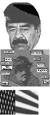

|
 |
 |
||
| News | West staff | Reference | Software | My Brain and I |
The Gulf crisis |
February 24, 1998 |
|  | By David WattsCNN carpet-bombed the world with its coverage of the 1991 Gulf war. It was as if death and destruction were spectator sports to be watched from the comfort of an armchair. The Internet adds a human dimension to massive coverage of the Iraq crisis, offering much more than officially-sanctioned views. That is not to say the traditional media outlets don't get a look-in. They have some of the best Web sites on the crisis. CNN: Standoff with Iraq, as you might expect, packs the latest developments along with a historical perspective. It offers surfers a discussion forum as well. Another US cable news organisation C-SPAN has coverage in RealVideo and Audio to complement a good array of links. The BBC has an impressive page of up-to-the-minute reports and links. And our own ABC offers similar treatment. Both have tried for a balanced approach, presenting Iraqi views as well as US, British and Australian ones. But the most mind-boggling set of resources comes, not surprisingly, from one of the true warriors of the Net. Yahoo has several pages of links to major headlines, Web sites (possibly 100 or more) and discussion groups. For official political and diplomatic news and views, the Australian Department of Foreign Affairs and Trade site has an Australian perspective with a lot from the minister, Alexander Downer -- it is an official Government site after all. The United Nations site is full of the latest press releases, plus full text of the resolutions that Iraq is in breach of. An official Iraqi view of the crisis is available at the Permanent Mission of Iraq to UN. It includes speeches by Saddam Hussein. Military buffs and those who just crave information should be fulfilled in their quest for knowledge about troop numbers, arsenals and chemical weapon types at both Jane's Defence Weekly and MILNET (Military Net). Good summaries of the politics, history and demographics of the Middle East are on show at Arab Net. An interesting display of diverse views is available at The Differences Between US and Iraq. Anti-war views and resources for peace activists are well presented at Iraq Crisis Anti-war Homepage, a product of the Nonviolence Web organisation. Israelis claim they have the most to fear from Iraq's weapons, but that does not stop them having a bit of a wry look at the situation at the Virtual Jerusalem site where a Saddam-O-Meter is in operation. Surfers let the site know how they feel -- the scale goes from "complete calm" to "all-out panic" -- and responses are mapped to a meter. The needle has been flickering at the panic end for a few weeks now. What looks like a very sensationalist view of the crisis, Saddam's Republic of Fear from Out There News, offers some excellent resources, including interactive military and political maps of the Gulf region.
|
All articles Copyright: © West Australian Newspapers